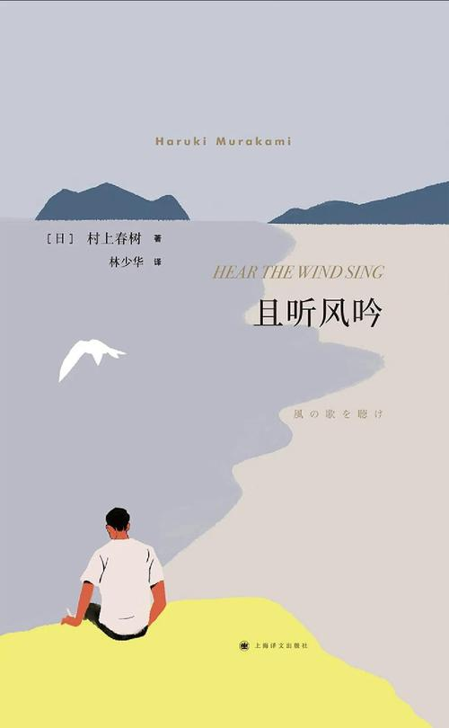
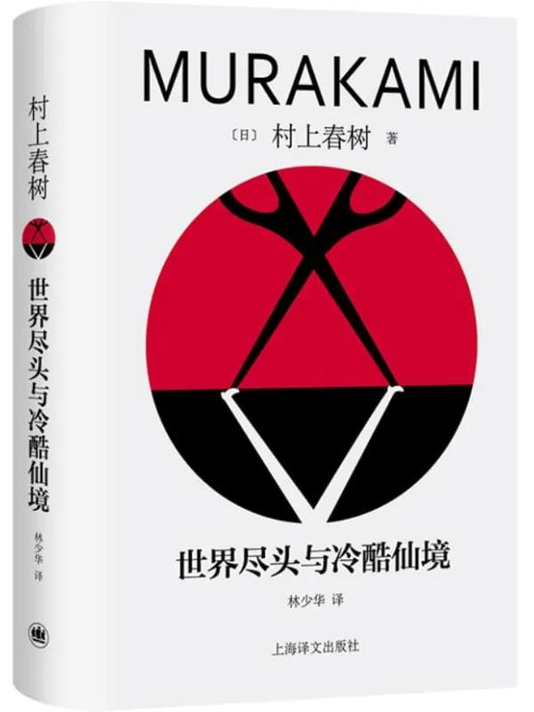
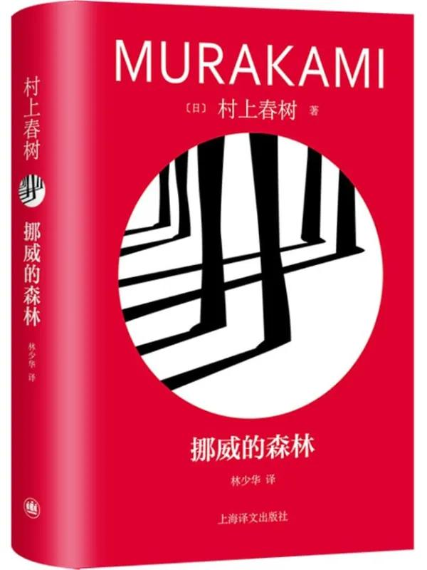
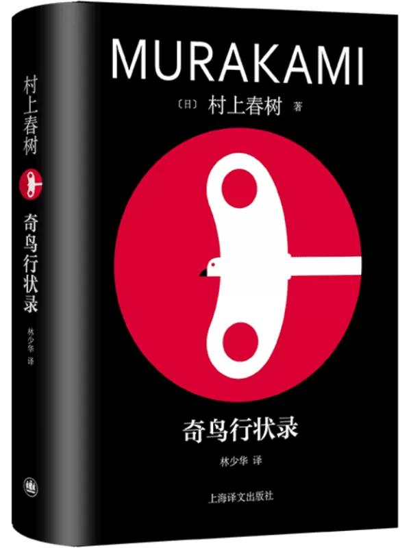
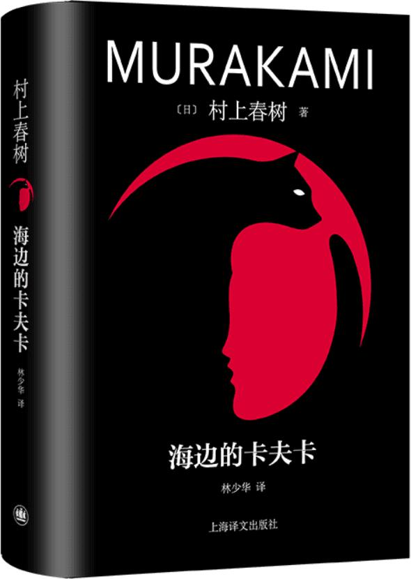
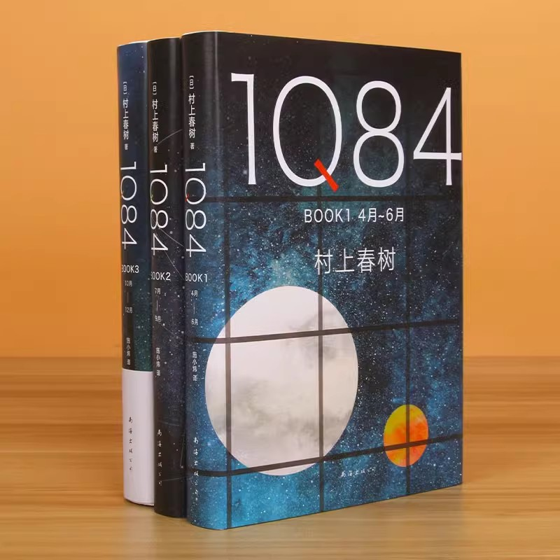
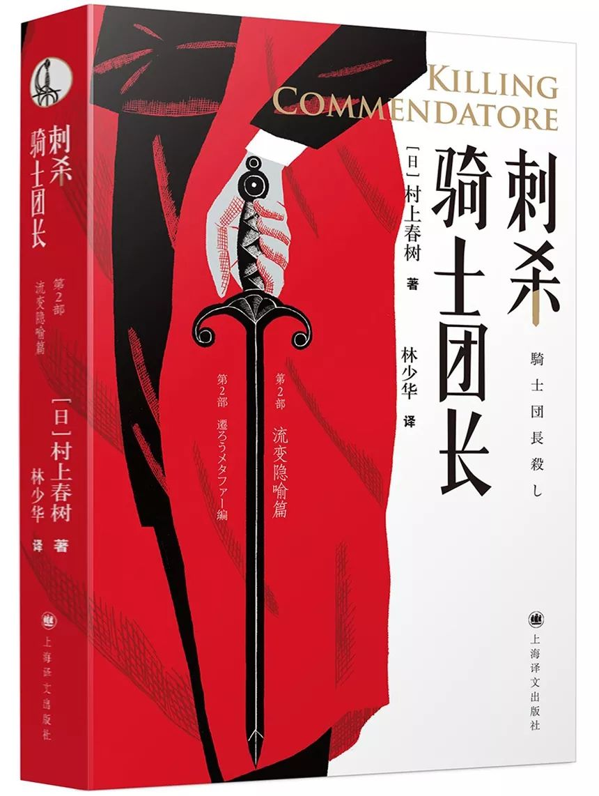
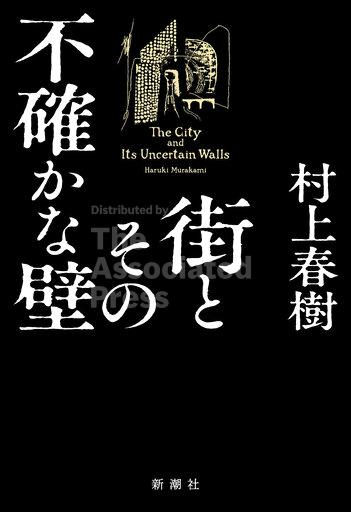
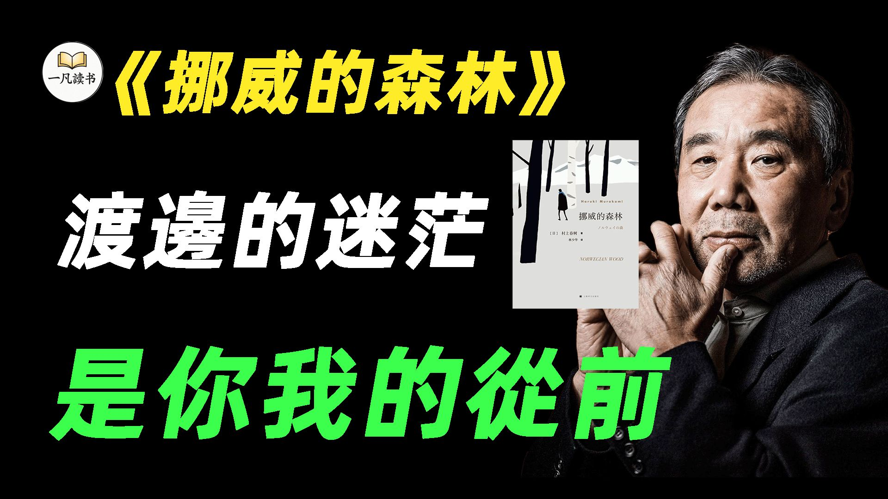

且听风吟
四十个短章，一个夏天，一间酒吧，一个醉倒的女孩。"我"、鼠、杰三个人的闲谈构成整部小说的骨架。 它几乎不写情节，只写气氛——那种"什么都发生了，又什么都没留下"的气氛。 结尾他把这个故事丢进风里，这个动作后来成了习惯：不给答案，只给一个已经走远的背影。


从四十页的处女作到一千二百页的新作，他反复写同一件事，却每次都换一种讲法。 下面按阶段排列，每本书留一句最重要的判断——先看骨架，细节留给下一页。

四十个短章，一个夏天，一间酒吧，一个醉倒的女孩。"我"、鼠、杰三个人的闲谈构成整部小说的骨架。 它几乎不写情节，只写气氛——那种"什么都发生了，又什么都没留下"的气氛。 结尾他把这个故事丢进风里，这个动作后来成了习惯：不给答案，只给一个已经走远的背影。
"我"执着于寻找一台早已停产的弹子球机，鼠则在另一条线上与过去告别。 寻回某样东西——这个动作第一次成为小说的发动机，后来被反复使用。 弹子球机是战后一代人的玩具，也是他们童年的容器；找机器，其实是找那个还相信输赢的自己。
一张照片里有一头背上有星纹的羊，于是"我"北上北海道。侦探小说的壳，装的是体制与权力的寓言。 这是他第一次把"恶"写成具体的东西：不是抽象的坏，而是一份名单、一间事务所、一个随时能打来的电话。

单数章是赛博都市里的计算士，双数章是没有心的高墙小镇。两条线直到最后也不交汇， 一个人被劈成了两半。小镇里的人要交出影子才能住下，图书馆里有人在"读梦"—— 这是他第一次把"失去自我"写成一个可以参观的地方。这本书也是他篇幅最长的一次。

直子、绿子、木月，一九六九年的东京。这是他最"不村上"的一本——没有超现实， 只有青春、丧失与无法救治的悲伤。写法是彻底的写实：宿舍、课堂、地铁、疗养院的雨。 它让作者变成畅销作家，也让"死并非生的对立面"成了整整一代人记住的句子。
一间叫海豚宾馆的旧旅馆、一个名叫雪的女孩、一个"高度发达的资本主义社会"。 书名来自一首老歌，"要跳要舞"在这里是活下去的指令—— 不跳，就会掉进那个时代挖好的空洞里。
三十七岁的"我"，事业有成、家庭安稳，却在一次重逢里被少年时的缺口击中。 小说给这种状态取了个名字："西伯利亚癔症"——走着走着，忽然想往西一直走下去。 这是他第一次把主角写成彻底的成年人：有房、有店、有孩子，仍然被一个早已不在的人牵着走。

妻子失踪，一只拧发条鸟在树上叫，一口枯井通向过去。冈田亨与绵谷升的对峙，牵出诺门坎战役与满洲的阴影。 井在这本书里是通道：下到井底，时间开始往回走。他第一次把日本的战争记忆正面写进小说， 也是他篇幅最大的一次。
两个女孩和一个旁观的"我"。斯普特尼克是第一颗人造卫星，发射后不久便失联—— 这本书写的就是这种"上去了、回不来"的关系：贴着轨道飞行，却永远无法落地。

十五岁的田村卡夫卡出走，失忆的中田老头会与猫说话。两条线由一块入口石连接起来： 一个预言被一点点兑现，一个世界被一点点打开。结构极完整——预言、替身、入口、返回， 几乎照着神话的骨架来写；同时它又是一本成长小说，最后少年回到现实，带着一身伤。
从半夜十一点到次日清晨，一个家庭、一间情人旅馆、一台"看不见的摄像机"。 写法像一台固定机位的机器，只记录这一段时间里几条互不相干的人生—— 城市在夜里露出的面孔，比白天更诚实。

青豆和天吾，两个平行叙述者，头顶两个月亮，一群叫"小小人"的东西在暗处工作。 三卷本，前两卷双线交替，第三卷加入第三个视角。它把邪教、家庭暴力与宗教狂热放进童话的壳里， 也第一次大量使用第三人称的多视角轮换。
三十六岁的多崎作被高中时代的小团体驱除，却始终不知道为什么。 "没有色彩"是他的自我判断：名字带颜色的人都有归属，只有他没有。 他一个个去见旧友，像朝圣一样把十六年前的伤口重新打开。

肖像画家住进山间旧居，在阁楼发现一幅不为人知的画。画里那场刺杀，指向一段被掩埋的战争记忆。 书里写到南京，在日本引来一阵攻击，他没有收回。"哪怕云层再黑再厚，背面也银光闪闪"就出自这里。

他把一九八〇年的同名短篇扩写成一千二百页。被高墙围住、没有影子的城， 与中年后回到小镇图书馆的"我"，两个世界终于开始互相走动。 七十四岁的作家，写的仍是十七岁时的问题，只是这一次他给了出口。
下面的视频都来自 B 站，不替代原著，只提供一条进入的路线。主视频通讲《挪威的森林》， 后面三条分别拆《1Q84》、谈虚幻与现实的边界，最后一条讲作品改编成电影之后的得失。

B 站 7:34七分半钟走完整本小说：从木月之死带来的孤独，到与直子若即若离的关系， 再到疗养院里的自我疗愈，以及绿子闯进来时那种活生生的力气。 它不提供新结论，但把情节线索理得很清楚，适合读之前先看一遍。
B 站 · 2025-09 · 7 分 34 秒 · 点封面或 在 B 站打开 ↗
六千字讲稿配影像，从三卷本的情节走向谈到小说里的孤独与自我。 想看学术一点的说法，这条比短视频扎实。
B 站 · 2024-12 · 作家解读十八分钟通讲三卷本：两个月亮、小小人、青豆与天吾的平行线。 适合先看一遍情节，再带着问题回去读原作。
B 站 · 名著解读 · 18:20刘梓洁主讲，从陈英雄的《挪威的森林》讲到滨口龙介的《驾驶我的车》—— 小说改成电影，究竟该忠实于情节，还是忠实于那个气氛。
B 站 · 2024-06 · 文学讲座延伸阅读（站外文章）： 林少华《"挖洞"与"撞墙"，孤独与"孤绝"》 · 《失去他者的孤独》